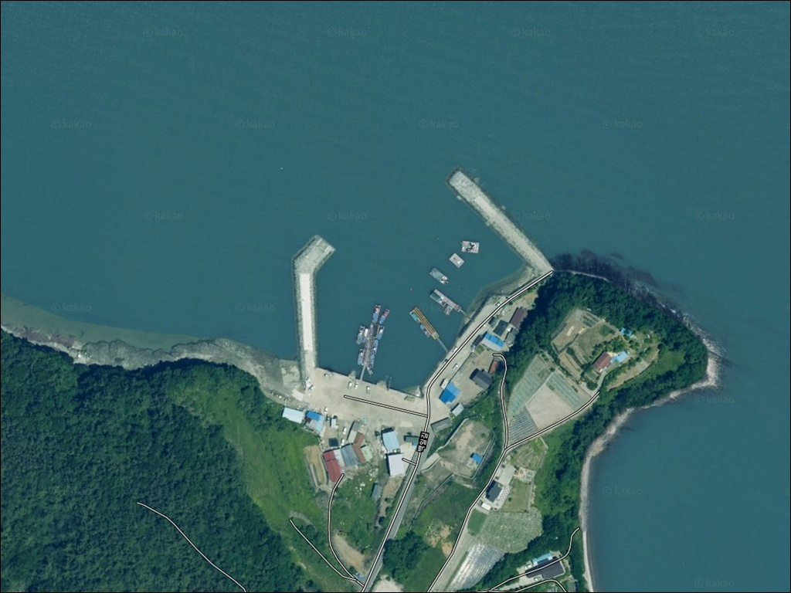
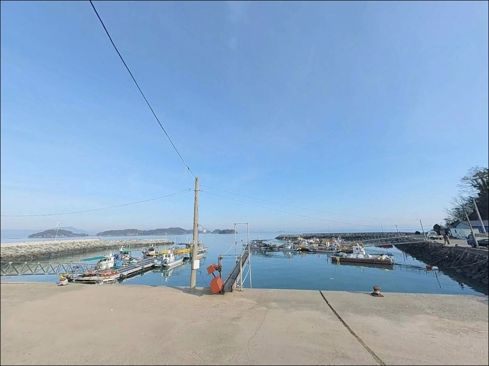
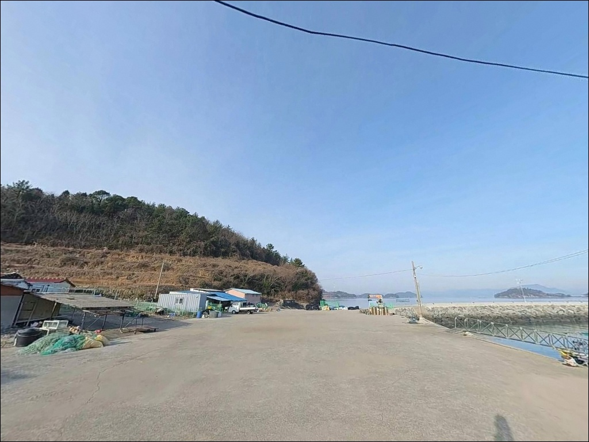
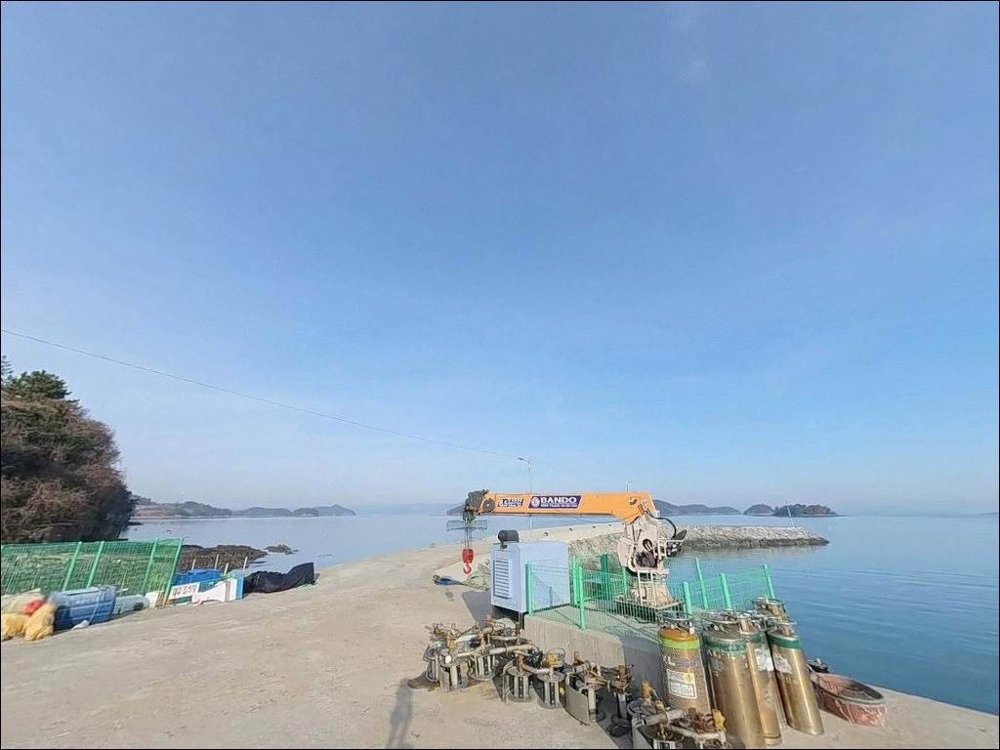
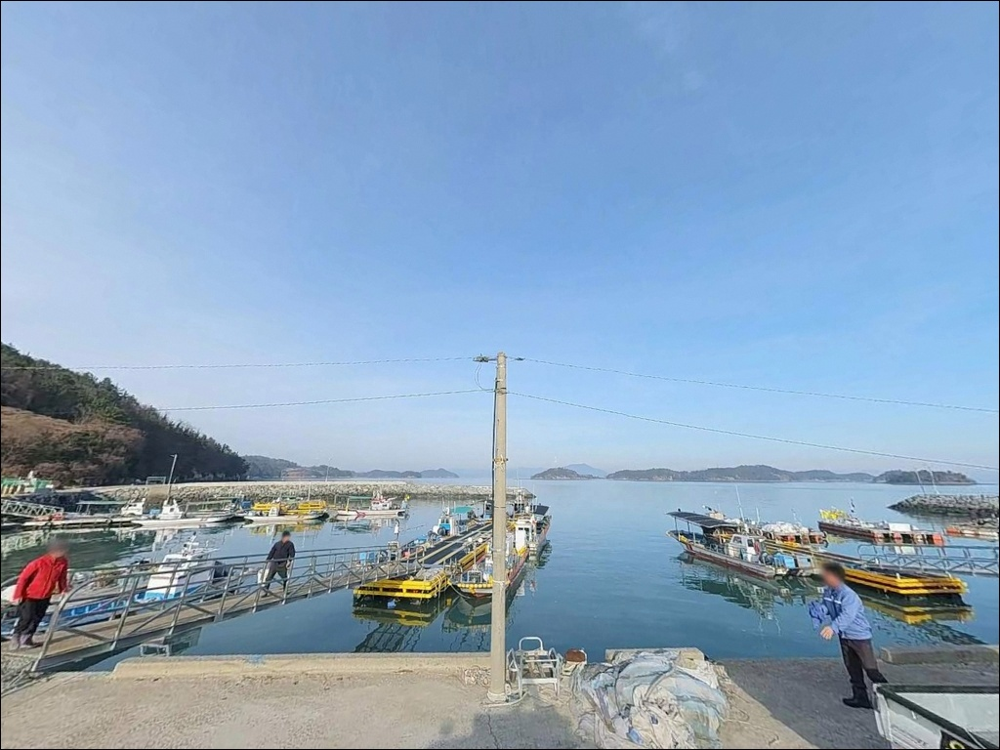
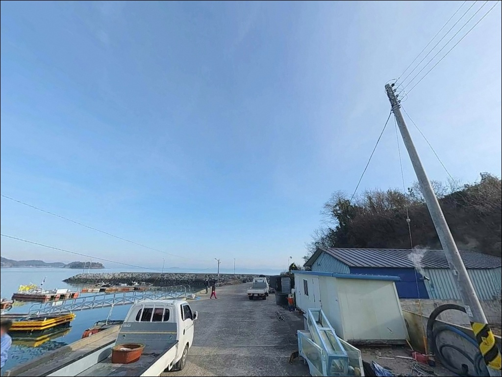
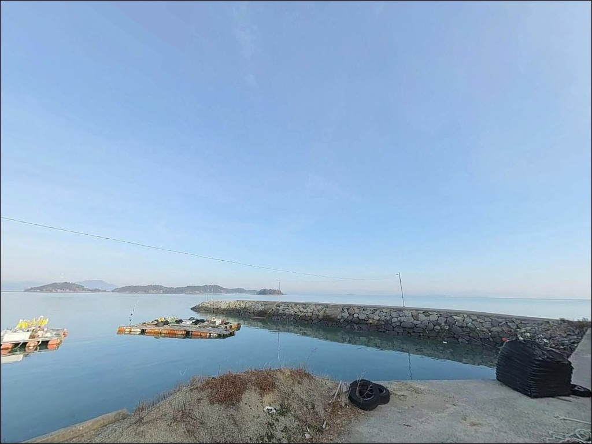
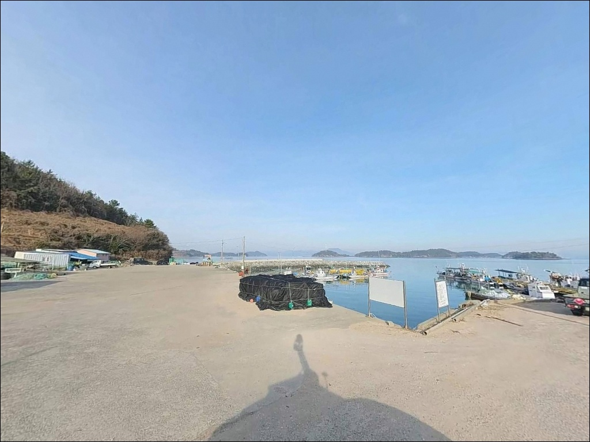

간조면 갯벌만 보이는 고흥 백일항, 만조 전후 2시간 원투낚시 공략


포인트 안내
백일항
전남 고흥군 과역면 백일리 1197
만조 전후 타이밍을 계산하지 않고
백일항에 도착하면,
선착장 앞이 온통 갯벌로 드러나
어떤 채비도 투입할 자리가 없습니다.
여자만 안쪽 내만형 구조의 특성이
물때를 조과의 전부로 만드는 포인트입니다.
백일대교를 건너 진입하는 백일도 안쪽에
자리한 이 선착장은,
좌우 방파제가 선착장 건물을 감싸는
소형 항 구조로 이루어져 있습니다.
방파제 끝단에서 외해 방향 물골을 향해
채비를 투입하는 원투낚시가
이 포인트의 기본 공략 방식입니다.
이 글은 백일항의 진입 동선, 차박 여건,
물때 기반 낚시 판단 기준,
스타일별 공략 조건에 집중합니다.
조황 단정이나 특정 어종 보장은
이 글의 범위에 포함되지 않습니다.

1. 진입 동선과 포인트 접근 여건
백일도는 고흥 과역면에서
백일대교를 건너 진입하는 연육 섬입니다.
교량 진입 자체는 차량 기준 문제가 없으나,
캠핑카나 대형 카라반이라면
출발 전 교량 폭과 하중 제한을
반드시 사전 확인하는 편이 좋습니다.
섬 내부 도로는 과역면 포장도로를 따라
언덕을 하나 넘으면 선착장에 바로 닿는
1차선 단차로 구조입니다.
속도를 낮추고 진입해야 하며,
초행이라면 내비게이션을 "백일리 1197" 또는
"백일항"으로 설정하는 것이 효율적입니다.
주차 후보지는 세 곳입니다.
선착장 앞 빈터가 가장 넓고,
우측 방파제 초입 쇠사슬봉 앞 평지와
좌측 방파제 기저 평지도 활용 가능합니다.
어민 작업 차량 이동로를 확보한 뒤
자리를 잡는 것이 기본 매너입니다.

2. 차박 환경과 야간 체류 여건
백일도는 면적 2.06㎢의 소규모 섬으로
민가 밀집도가 낮고 야간 차량 통행이 거의 없습니다.
선착장 앞 빈터에 주차한 채로 하룻밤 머무는 구조이며,
프라이버시는 양호한 편입니다.
다만 선착장 건물 바로 옆에 민가가 인접한 구조라
소음과 발전기 사용은 자제해야 합니다.
항만 보안등이 일부 설치되어 있어
기본적인 야간 이동은 가능합니다.
방파제 끝단으로 나갈 경우
조명이 없는 구간이 생기므로
개인 헤드랜턴은 반드시 지참해야 합니다.
여자만 내만형 구조라
외해 파도 영향은 상대적으로 작은 편이며,
강풍이 없는 날 기준으로는 정숙한 환경입니다.


3. 주변 편의시설 및 인프라 현황
백일항 선착장 건물 내에
화장실이 구비되어 있습니다.
이 점은 소형 어촌 선착장 기준으로는
드문 편의 조건입니다.
낚시 중 긴 시간을 머무는 경우에도
기본 위생 여건은 확보된 포인트입니다.
편의점·마트·식당가는 백일항에서 없습니다.
백일대교를 건너 과역면 소재지 방향으로
차량으로 10~15분 정도 이동하면
편의점, 마트, 낚시점이 밀집한 상권에 닿습니다.
미끼, 얼음, 식수, 연료는
반드시 출발 전 완전히 준비하고 진입하는 것이
현실적인 방문 방식입니다.
응급 상황이 발생할 경우
과역면 보건지소와 인근 약국이
가장 먼저 연결할 수 있는 의료 자원입니다.
고흥읍 방향으로 더 이동해야 하는 상황도
고려해 출발 전 비상약품을 챙기는 편이 좋습니다.

4. 물때와 진입 전 반드시 챙길 준비사항
백일항 방문에서 가장 먼저 확인해야 할 것은
물때입니다.
여자만 안쪽 내만형 해역 특성상 조차가 크고,
완전 간조 시에는 선착장 앞 일부 구간에서
바닥이 드러납니다.
만조 전후 2~3시간이 실질 낚시 가능 시간대이며,
바다타임에서 백일도 기준 물때를
출조 전날 확인하는 것이 기본 전략입니다.
기상 변화에도 대비해야 합니다.
내만형 구조라 파도 영향은 적지만,
강풍이 불 경우 체감 영향이 크게 올라옵니다.
출조 당일 아침 기상청 해상 예보를
한 번 더 확인하고 출발하는 것이
헛걸음을 막는 기본 준비입니다.
펄 바닥 지형 특성상 야간에는
방파제 가장자리와 선착장 둘레에
해조류·뻘이 섞인 미끄러운 구간이 형성됩니다.
구명조끼는 방파제에 서는 순간부터 착용하고,
야간 낚시 시 혼자 방파제 끝단으로
진입하는 것은 피하는 편이 안전합니다.
어선 계류 구역과 어구에
접촉하지 않는 자리 선정도 기본 매너입니다.

5. 물때에 따라 달라지는 백일항 낚시 여건
백일항의 지형 구조는
좌우 방파제가 선착장 건물을 감싸는 형태입니다.
우측 방파제가 더 길고,
방파제 끝단에서 외해 방향으로
직선 캐스팅이 가능한 위치가 확보됩니다.
끝단 수심은 만조 시 2.5~7m 수준으로,
수로 입구 쪽에서 수심이 급변하는 구간이 형성되어
이 지점이 채비 투입의 핵심 자리입니다.
바닥은 전형적인 펄 혼합 지형입니다.
밑걸림이 거의 없어 원투 채비 운용에 수월하지만,
간조로 내려갈수록 수심이 얕아지면서
채비가 제대로 안착하지 않습니다.
조류는 외해에 비해 완만한 편이지만,
들물 타이밍에 조류 흐름이 살아나는 구간이
이 포인트에서 입질이 집중되는 시간대입니다.
사리 전후에는 조류 속도가 빨라져
채비 컨트롤이 어려워지는 경우가 있습니다.
조금 전후 또는 만조 전후를 노리는 타이밍이
이 포인트에 가장 잘 맞습니다.
출조 전에 백일도 일대 최신 조황을
검색해보는 것을 권합니다.


6. 포인트에 어울리는 낚시 스타일
이 포인트에서 가장 잘 맞는 방식은 원투낚시입니다.
펄 혼합 바닥과 만조 시 확보되는 수심 구조가
원투 채비가 안정적으로 안착하기 좋은 조건입니다.
30호 이상 봉돌을 사용해
물골 중심부나 방파제 끝단 외항 방향으로
30~60m 내외를 공략하는 것이 기본 전략입니다.
붕장어, 숭어, 보리멸, 도다리 계열 어종이
이 해역에서 기대해볼 수 있는 바닥권 어종이며,
야간 원투에는 붕장어 반응이 나오는 편입니다.
에깅도 이 포인트에서 시도해볼 수 있는 스타일입니다.
고흥 일대 연안 전체가 갑오징어 포인트 지형에 해당하며,
방파제 발밑 구조물 주변과
만조 전후 중층 탐색이 유효한 구간입니다.
갑오징어 에깅은 만조 수위가 유지되는 시간대에 집중하는 것이
이 포인트 조건에 잘 맞습니다.
찌낚시도 들물 타이밍에 연계할 수 있습니다.
외항 방향 수심 3~5m 내외 구간을
반유동 채비로 노리는 방식이 이 지형과 어울리며,
감성돔을 기대할 수 있는 시기는
가을부터 이듬해 봄까지입니다.
라이트 루어로는 소형 지그헤드나
메탈지그를 활용한 생활어종 탐색을
원투와 병행하는 운용도 가능합니다.

7. 대안 포인트와 플랜 B 동선
백일항 주차 여건이 여의치 않거나
조류가 기대에 못 미칠 때는
원주도 방파제가 첫 번째 대안입니다.
백일항에서 약 3.7km 거리에 위치하며,
동일한 여자만 내 해역 조건을 공유합니다.
조류 패턴과 어종 분포가 유사하기 때문에
채비와 낚시 방식을 그대로 가져갈 수 있습니다.
두 번째 대안은 낭도항 방파제입니다.
같은 과역면 권역에 속하는 방파제로,
원투와 찌낚시 병행이 가능한 구조입니다.
세 번째로는 진지도 선착장을
탐색 대상으로 삼을 수 있습니다.
여자만 내 동일 해역 패턴을 공유하며,
방파제 끝단 중심 낚시가 가능한 구조입니다.
차박 대안으로는 과역면 해안선을 따라
소규모 주차 여건을 갖춘 어촌 방파제를
현장에서 탐색하는 방식이 현실적입니다.
진입로가 포장되고 주차 공간이 넓은 곳을
우선 기준으로 삼으면 됩니다.

물때를 맞추면
백일항은 조용하고 실속 있는 포인트입니다
원투낚시와 에깅을 즐기는 낚시인이라면
백일항의 펄 바닥 구조와 내만형 지형이
잘 맞는 조건입니다.
만조 전후 시간대를 제대로 맞춰 들어오면
방파제 끝단에서 바닥권 탐색과
갑오징어 중층 탐색을 병행할 수 있습니다.
주변 조황 정보가 풍부한 포인트는 아니지만,
선착장 화장실이 구비된 점과
조용한 야간 환경은 실용적인 장점입니다.
반면 물때 계산 없이 간조 시간대에 도착하거나,
편의시설을 기대하고 자급 준비 없이 진입한다면
출조 자체가 힘들어지는 구조입니다.
물때 확인, 완전 자급 준비, 진입로 사전 파악—
이 세 가지를 갖추고 찾아간다면,
고흥 북부에서 조용히 낚시와 차박을
동시에 즐길 수 있는 현장이 됩니다.